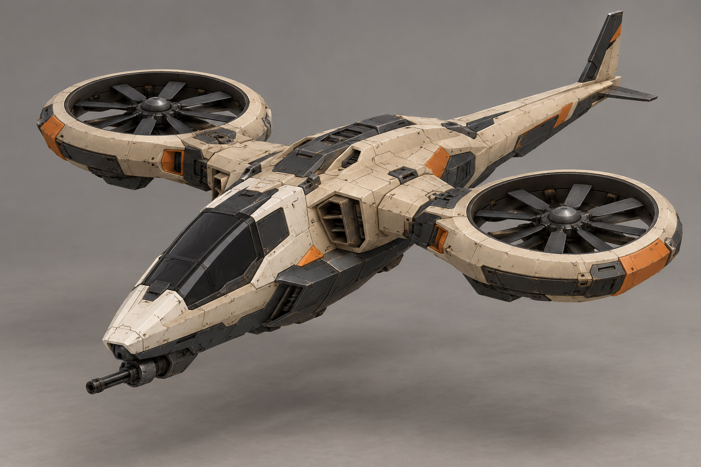
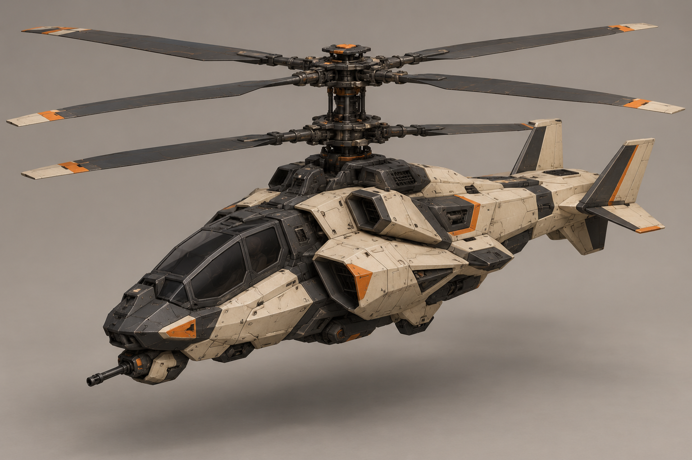
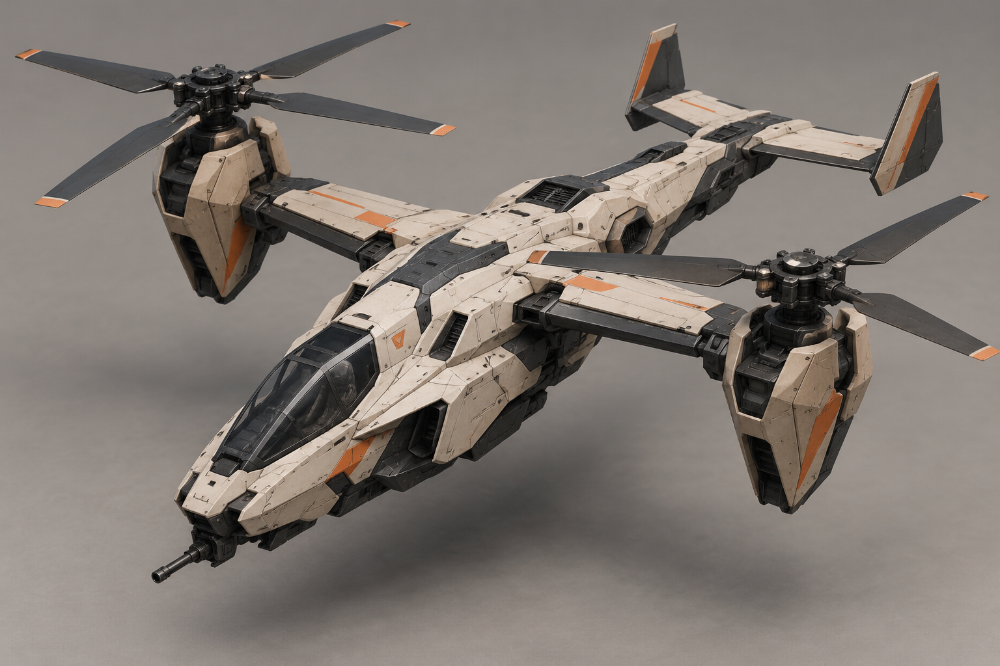
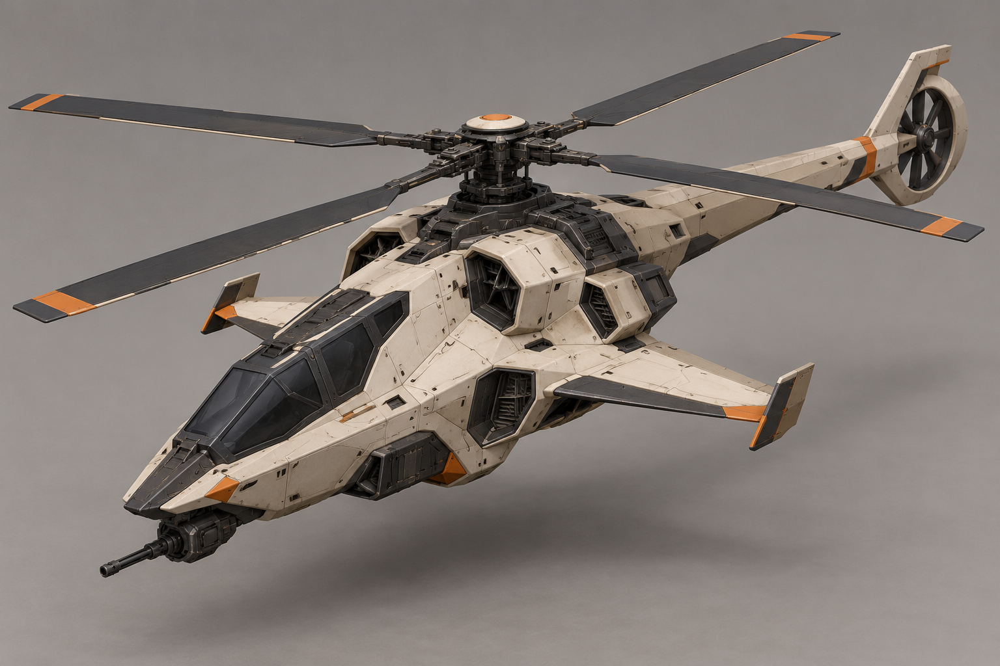
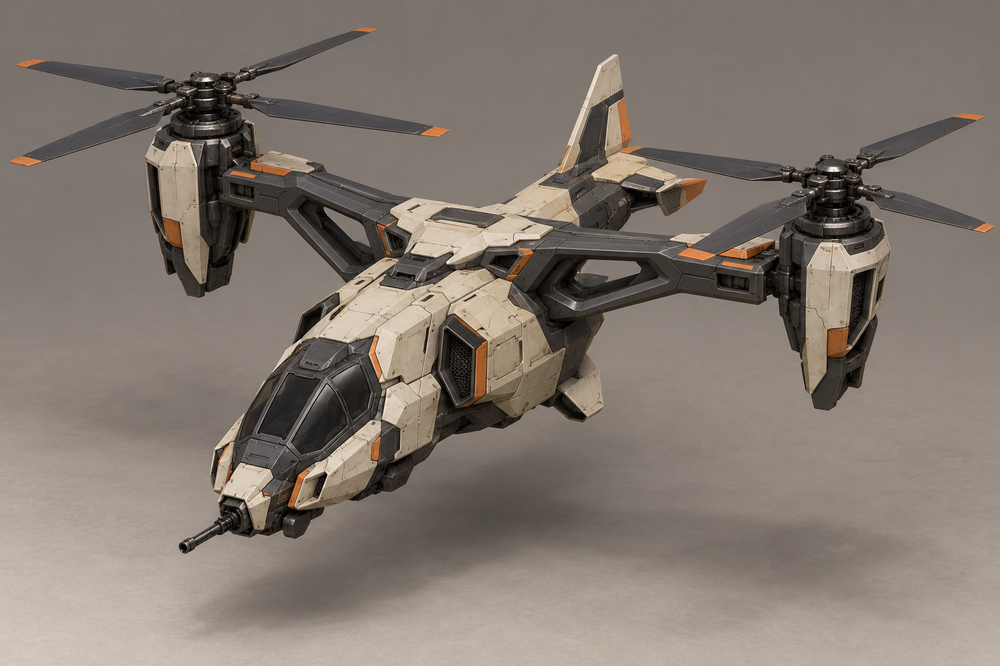
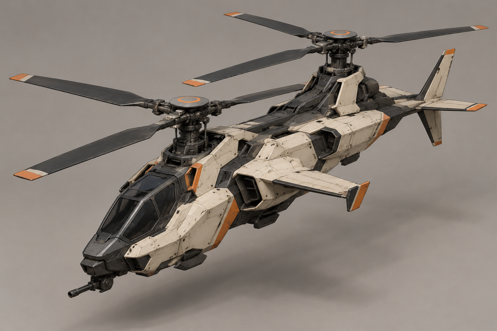
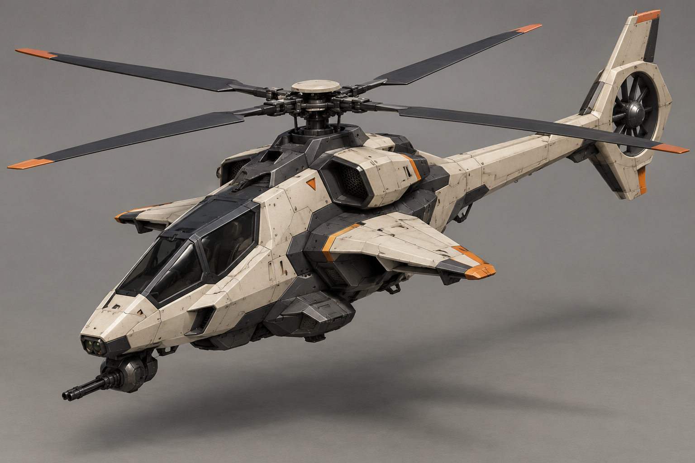
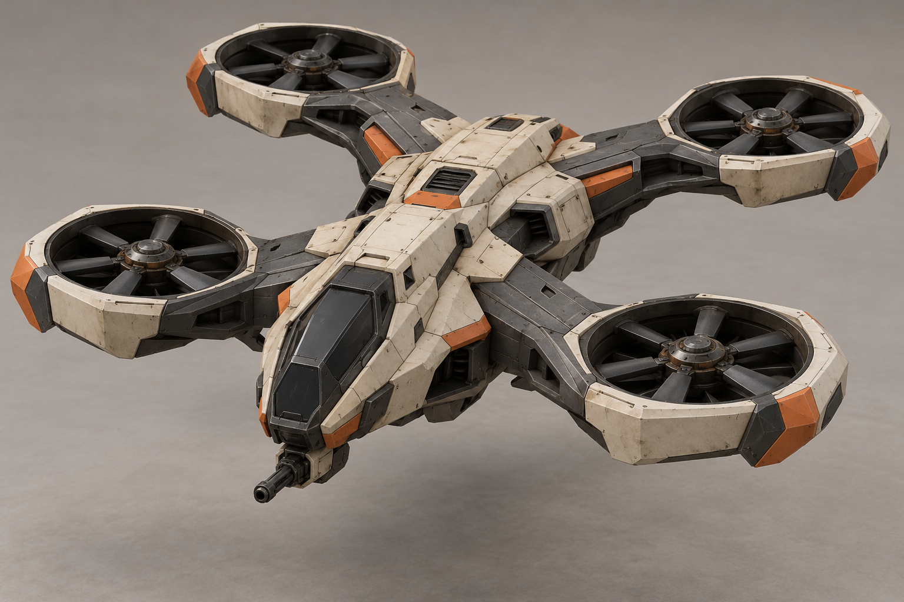

A «Стриж»
Компактный узкий корпус и два кольцевых подъёмных вентилятора.

Промпт
B «Ось»
Соосные винты над гранёным корпусом, без длинной хвостовой балки.

Промпт
C «Конверт»
Два крупных винта на концах короткого крыла и вытянутый тонкий фюзеляж.

Промпт
D «Стрела»
Низкий вытянутый корпус, основной винт и кольцевой хвостовой винт. Задний толкающий пропеллер из запроса не получился.

Промпт
E «Скоба»
Широкая поперечная рама с двумя винтами и короткая центральная кабина.

Промпт
F «Тандем»
Два продольных винта, ступенчатый корпус и минимум выступающих крыльев.

Промпт
G «Клин»
Один основной винт, закрытый хвостовой и выразительный клиновидный нос.

Промпт
H «Крест»
Четыре компактных вентилятора в скошенной раме вокруг низкого корпуса.

Промпт